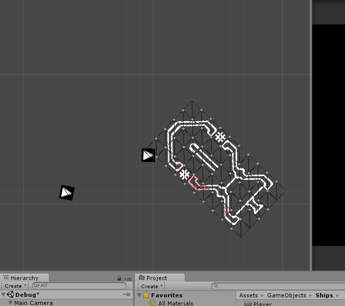

Lovac
Lovac is my current project. It’s a 2D top-down ASCII space shoot-em-up, centered around collecting modules to expand your ship. The original prototype started in Unity as an experiment to see how far I could push ASCII art. I felt like I was fighting with Unity a lot on how I was originally trying to render the planets, so I began work on another prototype in LatticeLight. This time, I generated the planets in a much cleaner way, but when i got to building the module systems I realized Unity’s component architecture would be an extremely good fit, and I could port the new planet generation.
The current planet generation in Lovac is another example of an odd mesh I’ve had to build. It’s actually hundreds of quads organized into a cylinder. I do some texture atlasing from a spritesheet to assign tiles their sprite. After that, it’s a simple shader to cut the corners off, making it look 2D with just a smidge of depth.
{kind=link}
{kind=link}
The planet's surface uses a Unity port of LibNoise. The part I really like is how simple Unity’s editor made it for me to set up generation ranges, so the planets are easily customizable.
{kind=link}
{kind=link}
I’m also pretty proud of the collisions from the original prototype. Ship collisions are done per-tile, so I use Unity’s physics as a broadphase. Ships could be made out of potentially 1000s of tiles, so it’s not viable to check every tile against every other tile every frame. The solution was to use a quadtree with a bucket size of 4. Instead of 1000s of tiles, the collision check only has to look at a few rectangles that get recursively smaller until it stops at a tile.
{kind=link}